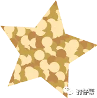
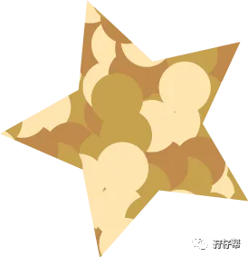
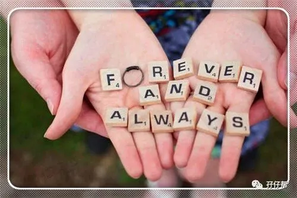
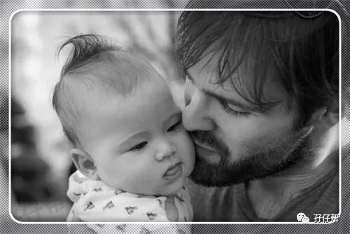
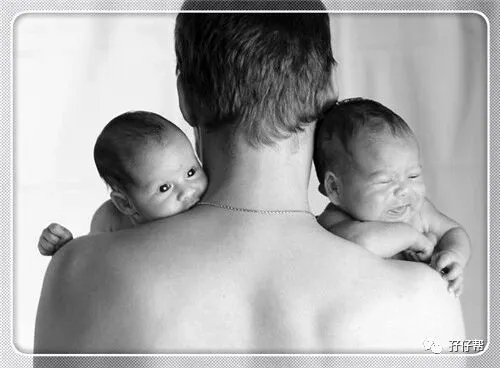
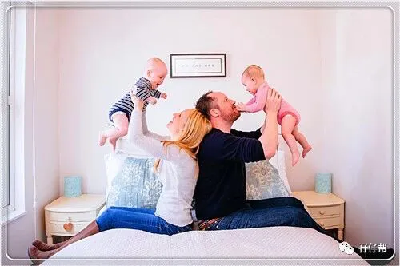
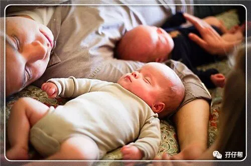
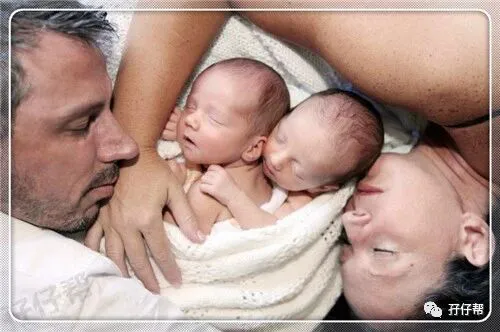
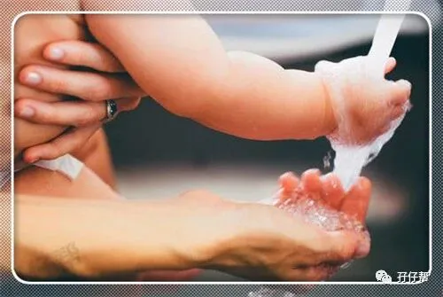
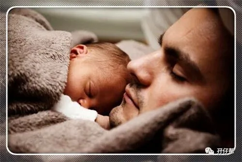

孖仔帮
与您分享双胞胎育儿路上的囧人囧事
点击蓝字
关注我们
文|圆圈妈
01
在孖仔帮双胞胎喂养群经常会吃到很多狗粮，印象最深刻的就是一双胎辣妈说：“我老公负责照顾两个孩子，我只负责花容月貌”。
天啊，这位宝妈是来拉仇恨的吗？那可是圆圈妈毕生追求的愿望啊。
潜水在各大双胎育儿群，发现一个很有意思的现象：普遍都是双胞胎爸爸带孩子，双胞胎妈妈则是吃瓜群众一枚+甩手掌柜一只。
哈哈，果然人的潜能都是被逼出来的！
两孩子同时饿了哭，同时尿了哭，同时病了哭…这样子逼法，没有哪个双胞胎爸爸可以熟视无睹，无动于衷！
难怪看世界杯喊破喉咙的都是奶爸居多，实在憋得慌啊，要发泄啊…
如果说双胞胎宝宝没有出生之前，你没时间看世界杯，让你怀疑人生，那么当奶爸之后，全世界都会看你如何被双胞胎宝宝们逼得无路可逃，只能上梁山…
你绝对会生！无！可！恋…
双胞胎宝宝出生后，你即将面对的是三个宝贝，一个随时都会莫名其妙大哭的老婆，还有两个除了哭还是哭的小宝宝。
会不会觉得三观全毁了呢？莫慌！上帝已经为双胞胎爸爸打点好了…看你要不要来学习下！关注孖仔帮，学习双胞胎育儿经！
这篇推文将会继续聊聊升级双胞胎爸爸之后，必须具备的生存技巧，免得作为重要队友的你优先患上产后忧郁症。
02
再说说圆圈爸…
圆圈爸在初为人父这一环节，可圈可点，总的来说，我给他90分。那遗憾的10分，是觉得他把我和婆婆的关系搞砸了。
他那种程序猿的思维实在不适合处理婆媳关系，在这场无硝烟的婆媳大战里，他注定会被秒杀且片甲不留…
如同所有卸货升级的新手妈妈一样，我焦虑，恐慌，满满的负能量…
圆圈兄弟出生的第一年，在金钱不自由，时间不自由的双重打压下，鸡犬不宁，鸡飞蛋打，鸡飞狗跳…每天都在上演。
庆幸自己还能活到今天，安逸地坐在电脑桌前码字…
圆圈爸功不可没。
若没有圆圈爸在，恐怕就没有“孖仔帮”了，而圆圈妈早已在某个精神病院里郁郁而终。
可能他真的是被两个新生儿逼的，也可能他天生就是双胞胎兄弟的爸爸，总之他很神奇地迅速进入了状态，一夜间秒变育儿达人。
冲奶粉，喂奶，换尿布，拍嗝…甚至圆圈拉的臭臭，他都能分辨出圆圈是奶吃多了还是肠胃不适。
只要圆圈兄弟在召唤，不管是深更半夜还是破晓黎明，他都能迅速响应，满足两小祖宗的需求。
而且，日复一日，年复一年…
他还无师自通学会了理发，他可以在3分钟之内剪完40个小指甲+小脚甲。
他可以…
03
我再啰嗦下去就跑题了。（SORRY…）
转入正题…顺利度过双胞胎宝宝的第一年，双胞胎爸爸的生存指南如下：
（该生存指南经过与圆圈爸彻夜详谈，总结出来…）
夫妻关系排第一
虽然双胞胎宝宝的出生让你分身无术，但是请记得除了关爱两个宝宝，也要关心宝妈的精神状况，双胞胎妈妈在宝宝出生后的前三个月，最容易患上产后忧郁症。
有人说如果想毁掉一个女人，那就娶她，让她生孩子，然后让她得产后忧郁症…
可见，产后忧郁症的杀伤力---杀人于无形之中！
没有了卿卿我我，你侬我侬，只有双胞胎宝宝奶水和屎尿…
即便如此，请依然记得在宝妈蓬头垢面的脸上狠狠来三个啵, 或者偷得浮生半日闲，一起去散步闲逛，享受下二人世界。
除了精神上的鼓励，也需要你行动起来，协助她，配合她一起照顾好两个小宝宝。
婆媳相处，翁婿相处能免则免
如果经济允许，宁愿请保姆月嫂，也不要让老人家掺和进小两口的育儿问题上。
月嫂保姆做的不好，你完全可以另请高明，但是面对亲妈丈母娘，你除了认怂还能做什么呢？
两边都是妈，甭管得罪了谁，都得吃不完兜着走…
若你不想做一块吃力不讨好的“夹心饼”，那就跟宝妈商量好双胞胎宝宝谁来带，如何带等一系列非常头疼闹大的问题。
虽然很现实，但这是事实！
圆圈妈的建议：只要经济允许，愿出钱出力请亲妈和丈母娘去旅游，也请她们不要过来帮忙带孩子。
不要问为什么…还是那句话，女人，不管老的嫩的，她们的小心思恐怕比虫洞还要深不可测，连爱因斯坦都要甘拜下风。
协调好工作与家庭的关系
双胞胎宝宝的到来，意味着你的睡眠是拼凑的，你的吃饭时间是随时随地的。
甚至上厕所拉到一半,只要两宝宝召唤，你必须把另一半臭臭忍回去，立马出现在两宝宝面前。
不要问我为什么说得那么贴切，因为我和圆圈爸就是这么过来的…（此处省略一万字的哭...）
这样的状态势必会影响到你的工作。
你当然不能找领导肝肠寸断地诉说，只能苦水泪水掺和点两宝宝的奶水一起吞进去，如果对自己的人品有信心，那就拜托下同事给予工作上适当的帮助。
双胞胎爸爸们，熬一熬吧！没事，会过去的！
04
以上是大方向要考虑的，还有以下几点小细节（这是我站在双胞胎妈妈的立场上总结的）
不要与宝妈分房睡
别以为你白天工作，你就有理由独享清静，你这样甩手掌柜的态度只会让宝妈有遗弃感。宝妈心情忧郁会影响母乳的哦！两孩子没有奶喝？你懂得…后！果！自！负！
再说了，你去隔壁房间睡，有逃避半夜起来喂奶的嫌疑哦…
不要错过两个宝宝的成长瞬间
第一次笑，第一次尿在自己身上，第一次吃辅食，第一次坐起来，第一次踏出第一步…
只要你不是比特朗普还忙（忙着打贸易战），那就常伴孩子们左右吧。
须知道，一个父亲的角色对孩子们日后的成长发育，塑造健全人格有极大的促进作用。
亲子关系的培养永远不嫌早
从读绘本开始...
当你在两宝宝的屎尿之间游刃有余了，请记得扔掉手机，拿起绘本，一字一句地念给宝宝们听。
虽然他们听不懂，甚至会撕咬你手上的绘本，但请坚持，耐心，继续读…
你会发现,有一天才满周岁的两小宝宝拿着书晃悠悠地朝你走来并对你说:”爸爸…书…”听到两句世上最美丽的声音，你绝对会老泪纵横，再一次相信人生。
为什么不是妈妈读绘本？
据说，宝爸特有的男性雄厚磁性的嗓音会让小宝宝听着绘本更容易上道（到底是不是呢？你可以试下哈！）
在不久的将来，你会非常感谢自己在双胞胎宝宝的婴幼儿期与他们建立起的亲子关系。
哦，别忘了一个很重要的东西，钱！
双胞胎宝宝的到来意味着什么呢，订月子中心，请月嫂保姆，换大房子，换七座车，娃娃们的每样用品都是双份…
没有钱，以上所有一切全都是瞎！扯！淡！
双胞胎宝宝出生后的第一年开销最大，总是会有各种理由让你不得不买买买，因此，你除了要承受精神肉体上的折磨，还要被金钱无情地嘲讽，肆意地践踏。
可以没有自我，没有自尊，没有自信，绝不可以没！有！钱！
突然间觉得，男人好难啊！我好心疼圆圈兄弟以后娶媳妇了怎么办？再也不敢大声怂圆圈爸：“让我来养家糊口了。”，
05
圆圈妈有话说
双胞胎育儿路上，离不开双胞胎爸爸的参与，宝爸是凝聚一个家的中坚力量，你的理解和照顾会让家庭关系更加和谐，坚不可摧。
没有哪个男人天生会做父亲，都是一路摸石头过河成长起来的，对于双胞胎爸爸来说，同时面对两个小宝贝，你要比别的爸爸付出更多，然而你得到的幸福却不止两倍那么多。
相信我！当你同时把两小宝贝抱在怀里的时候，所有一切都是值得的！
在此，我谨代表所有双胞胎妈妈对全天下的双胞胎爸爸说：“你们辛苦了，谢谢！”
后记：
继上一篇推文<<双胞胎准爸爸的生存指南01：不做猪一样的队友，活着出来喜当爹>>一下子冒出很多准爸爸要求加入孕期群。
不好意思！孕期群仅限双胞胎妈妈加入，因涉及到大量女性孕期隐私问题的深入交流，男士们应该不会感兴趣的哈！
BUT！！！
圆圈妈非常敬佩准爸爸们热忱加入育儿大军的一片痴心！
SO！！！
孖仔帮组建了双胞胎爸爸群。
在此你们可以互相交流下初为人父的喜悦和已为人父的辛酸，还有你们男人间的家长里短…尽情唠嗑吧！
入群方式：＋圆圈妈的微信(sgguy-com)，我会发群聊邀请给你们。欢迎准爸爸的加入双胞胎育儿大家庭，一起分享双胞胎育儿经。
1
END
1
本文系圆圈妈sgguy-com原创，来源于孖仔帮，专注双胞胎孕期育儿经验分享，著作权归孖仔帮所有。
长按识别二维码关注我们
我猜你肯定喜欢看下面的文章，对不对嘛？关注孖仔帮，回复下方文章前面的数字编号即可阅读。
105:同卵双胞胎的天敌--双胞胎输血综合征
201:双胞胎与唐氏筛查---美丽的邂逅
212:原来双胎妈妈可以这样数胎动，好简单啊
215:双胎子宫日记系列|（下）你看不看？双胞胎妈妈直播剖腹产全过程
302:喂养干货||如何训练双胞胎宝宝睡整夜觉
306: 真人示范！双胞胎妈妈高难度喂母乳技巧
404:双胞胎家庭生存技巧01：舍不得孩子套不住狼，新生入园开学季必备
604:那些又俗气又搞笑的双胞胎姓名大全【第一季】
711:想要做一个四海八荒的双胎妈妈，你需要这些工具
714:那个每天晚上9点钟才到家的双胎妈妈，失业了…
近日发现有些平台未经允许转载了圆圈妈的文章，在此声明下：
若喜欢圆圈妈的文章，无条件欢迎大家分享转发到朋友圈。
如需转载至公众号请联系圆圈妈（微信sgguy-com）授权，或扫以下微信二维码。
各位双胎妈妈，更多孖仔帮原创育儿文章请猛戳 "阅读原文" ，或者直接上圆圈妈的个人博客，大把双胎孕期育儿心得经验分享。
阅读原文：
https://www.sgguy.com/twinsbang












